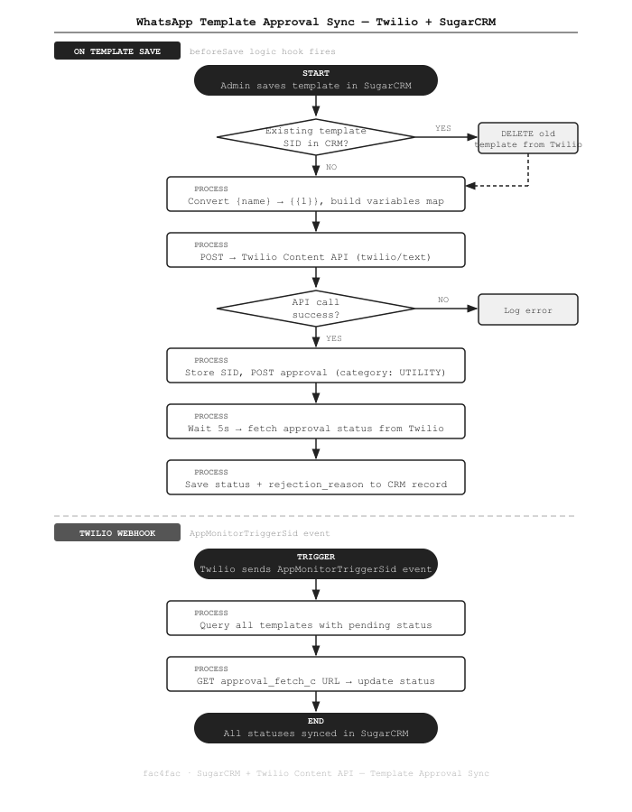

Auto-Sync WhatsApp Template Approvals with Twilio in SugarCRM
How a SugarCRM logic hook handles the full WhatsApp template lifecycle — from placeholder conversion to Twilio approval — automatically on save.
The Problem
WhatsApp Business requires pre-approved message templates for outbound messages sent outside the 24-hour reply window. Managing these templates manually — creating them in Twilio, waiting for approval, then copying the SID back into SugarCRM — was slow and error-prone. Admins had to context-switch between systems every time a template was added or updated.
What We Built
A SugarCRM beforeSave logic hook on the wsmt_whatsapp_message_template module that handles the entire Twilio template lifecycle automatically.
When an admin saves a template in SugarCRM, the hook: converts named placeholders, calls the Twilio Content API, submits the template for WhatsApp approval, and writes the approval status back — all without leaving the CRM.
A second sync path uses Twilio's AppMonitorTriggerSid webhook to refresh statuses in bulk.
How It Works

The Code
Step 1 — Convert named placeholders to Twilio's indexed format
Twilio's Content API uses {{1}}, {{2}} style placeholders, but writing templates
with {student_name} is much more readable for admins. The hook converts them automatically:
// Admin writes: "Hi {student_name}, your interview is on {date}."
// Twilio needs: "Hi {{1}}, your interview is on {{2}}."
preg_match_all('/\{(\w+)\}/', $description, $matches);
$placeholders = $matches[1]; // ['student_name', 'date']
$named_to_index_map = [];
foreach ($placeholders as $index => $named) {
$named_to_index_map[$named] = $index + 1;
}
// Replace each named placeholder with its Twilio index
foreach ($named_to_index_map as $named => $index) {
$wa_template = preg_replace(
'/\{' . $named . '\}/',
'{{' . $index . '}}',
$wa_template
);
}
// $wa_template is now: "Hi {{1}}, your interview is on {{2}}."
// $variables = [1 => 'student_name', 2 => 'date']Step 2 — Create the template in Twilio Content API
The hook POSTs the converted template to Twilio's Content API and stores the returned SID:
$data = [
'friendly_name' => $bean->name,
'language' => 'he', // Hebrew — change per your language
'types' => [
'twilio/text' => [
'body' => $wa_template // "Hi {{1}}, your interview is on {{2}}."
]
],
'variables' => $variables // [1 => 'student_name', 2 => 'date']
];
$ch = curl_init('https://content.twilio.com/v1/Content');
curl_setopt($ch, CURLOPT_RETURNTRANSFER, true);
curl_setopt($ch, CURLOPT_POST, true);
curl_setopt($ch, CURLOPT_POSTFIELDS, json_encode($data));
curl_setopt($ch, CURLOPT_HTTPHEADER, ['Content-Type: application/json']);
curl_setopt($ch, CURLOPT_USERPWD, "$account_sid:$auth_token");
$response = curl_exec($ch);
$response_data = json_decode($response, true);
// Store SID and approval URLs back on the CRM record
$bean->msg_template_sid_c = $response_data['sid'];
$bean->approval_fetch_c = $response_data['links']['approval_fetch'];
$bean->approval_create_c = $response_data['links']['approval_create'];Step 3 — Submit for WhatsApp approval
Twilio requires a separate call to submit the template for Meta/WhatsApp review:
public function approval_create($url, $name)
{
$data = [
'name' => $name,
'category' => 'UTILITY' // Options: UTILITY, MARKETING, AUTHENTICATION
];
$ch = curl_init($url);
curl_setopt($ch, CURLOPT_POST, true);
curl_setopt($ch, CURLOPT_POSTFIELDS, json_encode($data));
curl_setopt($ch, CURLOPT_HTTPHEADER, ['Content-Type: application/json']);
curl_setopt($ch, CURLOPT_USERPWD, "$account_sid:$auth_token");
curl_setopt($ch, CURLOPT_RETURNTRANSFER, true);
curl_exec($ch);
curl_close($ch);
}Step 4 — Fetch initial approval status
After a short delay, the hook checks the initial status so it's immediately visible in SugarCRM:
sleep(5); // give Twilio a moment to process the submission
public function fetch_status($url)
{
$ch = curl_init($url);
curl_setopt($ch, CURLOPT_HTTPGET, true);
curl_setopt($ch, CURLOPT_USERPWD, "$account_sid:$auth_token");
curl_setopt($ch, CURLOPT_RETURNTRANSFER, true);
$response = curl_exec($ch);
curl_close($ch);
$res = json_decode($response, true);
return [
'status' => $res['whatsapp']['status'], // pending, approved, rejected
'rejection_reason' => $res['whatsapp']['rejection_reason']
];
}
// Save back to the CRM record
$rs = $this->fetch_status($bean->approval_fetch_c);
$bean->msg_template_wastatus_c = $rs['status'];
$bean->rejection_reason_c = $rs['rejection_reason'];Step 5 — Bulk status sync via Twilio webhook
Twilio fires an AppMonitorTriggerSid event when template statuses change in bulk (e.g. after a platform-wide review cycle).
The webhook handler catches this and re-fetches every pending template's status:
// In handleWebhook_twilio.php
if (isset($data['AppMonitorTriggerSid'])) {
// Find all templates that are not yet approved or rejected
$sql = "SELECT approval_fetch_c, msg_template_sid_c
FROM wsmt_whatsapp_message_template t1
JOIN wsmt_whatsapp_message_template_cstm t2 ON t1.id = t2.id_c
WHERE t1.deleted = 0
AND NULLIF(msg_template_sid_c, '') IS NOT NULL
AND msg_template_wastatus_c NOT IN ('approved', 'rejected')";
$result = mysqli_query($conn, $sql);
while ($row = mysqli_fetch_assoc($result)) {
// Fetch current status from Twilio
$ch = curl_init($row['approval_fetch_c']);
curl_setopt($ch, CURLOPT_USERPWD, "$account_sid:$auth_token");
curl_setopt($ch, CURLOPT_RETURNTRANSFER, true);
$response = curl_exec($ch);
curl_close($ch);
$res = json_decode($response, true);
$status = $res['whatsapp']['status'];
// Update CRM status
$update = "UPDATE wsmt_whatsapp_message_template_cstm
SET msg_template_wastatus_c = '$status'
WHERE id_c = (
SELECT id FROM wsmt_whatsapp_message_template
WHERE msg_template_sid_c = '{$row['msg_template_sid_c']}'
)";
mysqli_query($conn, $update);
}
}Key Points
- No manual SID management. Admins write templates with readable
{variable}names. The hook handles all the Twilio indexing and API calls invisibly. - Delete-before-recreate. When a template is edited and re-saved, the old Twilio Content object is deleted first to avoid orphaned templates accumulating in the account.
- Two sync paths. On-save gives immediate feedback; the
AppMonitorTriggerSidwebhook catches batch status changes that happen asynchronously on Twilio's side. - Rejection reason stored. If WhatsApp rejects a template, the reason is written back to
rejection_reason_cso the admin knows exactly what to fix.
Stack
Need WhatsApp template management integrated into your CRM? Get in touch →